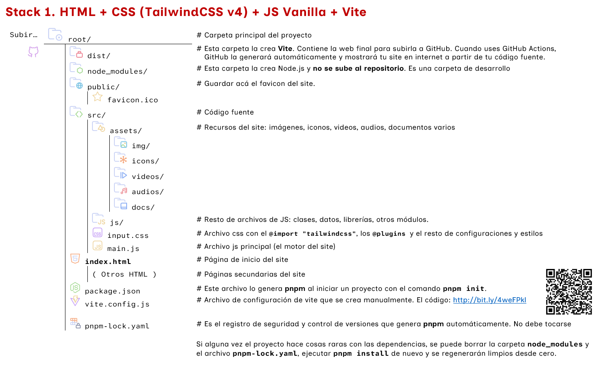

Tailwind CSS es un framework de CSS de "clases de utilidad" (utility-first). En lugar de ofrecer componentes prefabricados (como botones ya diseñados), proporciona clases de bajo nivel que se aplican directamente en el HTML. Es el estándar de diseño actual.
En el pasado hemos ido utilizando Tailwind css enlazado desde un cdn. Ahora lo instalaremos directamente en el proyecto para aprovechar todo su potencial.
Lo instalaremos haciendo uso de Vite, un servidor de desarrollo, compilador y empaquetador (bundler) que agiliza la creación de aplicaciones web. Los pasos del proceso, son los siguientes:
Paso 1: Creamos una carpeta para el nuevo proyecto y ejecutamos en la terminal pnpm init. (Ctrl Ñ para acceder) .
Esto inicia el proyecto Node.js. y genera el archivo package.json.
Paso 2: Desde la terminal ejecutamos
pnpm add -D vite @tailwindcss/vite glob para instalar el compilador Vite, Tailwind v4 y el motor de búsqueda de archivos, glob.
Paso 3: Creamos el archivo vite.config.js. Copia el siguiente código del Gist para que Vite detecte todas tus páginas HTML automáticamente.
vite.config.js
Paso 4: Creamos la estructura de carpetas y archivos (src/, public/, index.html, etc.) siguiendo el esquema visual que se presenta a continuación.

Paso 5: Arrancamos el servidor local en el ordenador para poder ver los cambios en tiempo real.
Para ello ejecutamos pnpm dev en la terminal
Paso 6: Ejecutamos pnpm build en la terminal para compilar el proyecto cuando esté terminado. Vite empaquetará y optimizará todo dentro de la carpeta dist/.
Paso 6: Desplegar en GitHub. Sube todo lo que hay dentro de dist/ a tu repositorio de GitHub y activa GitHub Pages como ya sabes hacerlo, para mostrar tu web.
El archivo input.css
En este stack, se trabaja con un único archivo input.css donde se deberá colocar todo el css del site.
En caso de querer agregar un plugin de css, solo se tienen que hacer dos cosas:
- Registrar el paquete desde la terminal con la instrucción
pnpm add -D [nombre-plugin] - Registrar el plugin en el archivo
input.csscon la directiva@plugin.
Agregaremos el plugin Tailwind CSS Typography para ejemplificar el proceso. Este plugin permite agregar estilos tipográficos a Tailwind.
Para instalarlo, ejecutamos en la terminal: pnpm add -D @tailwindcss/typography
Y luego lo registramos en el archivo input.css. A continuación se puede ver un ejemplo completo de la configuración de Tailwind en el archivo.